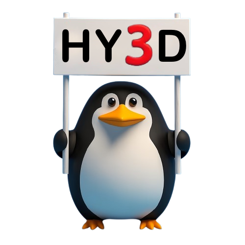
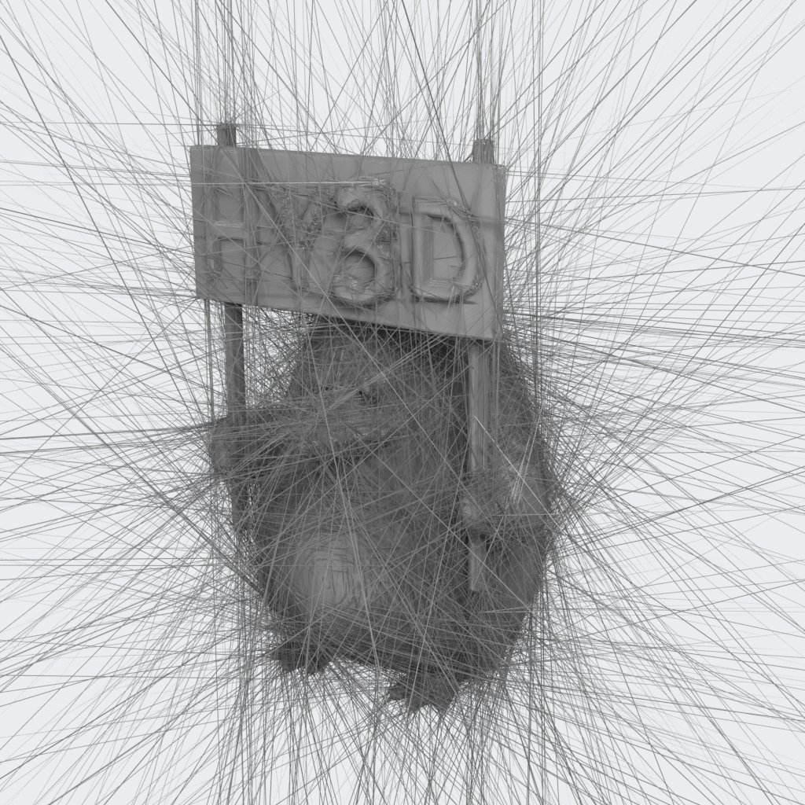
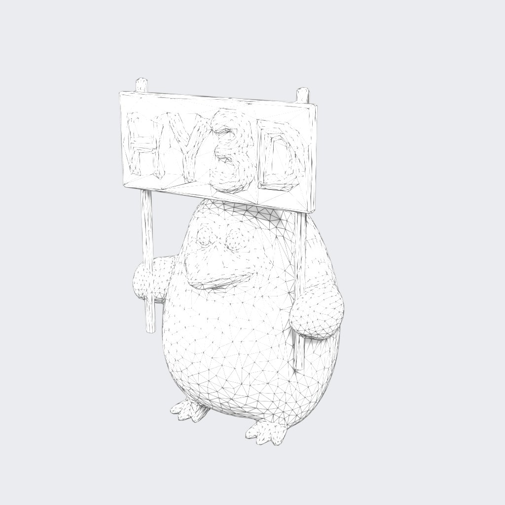
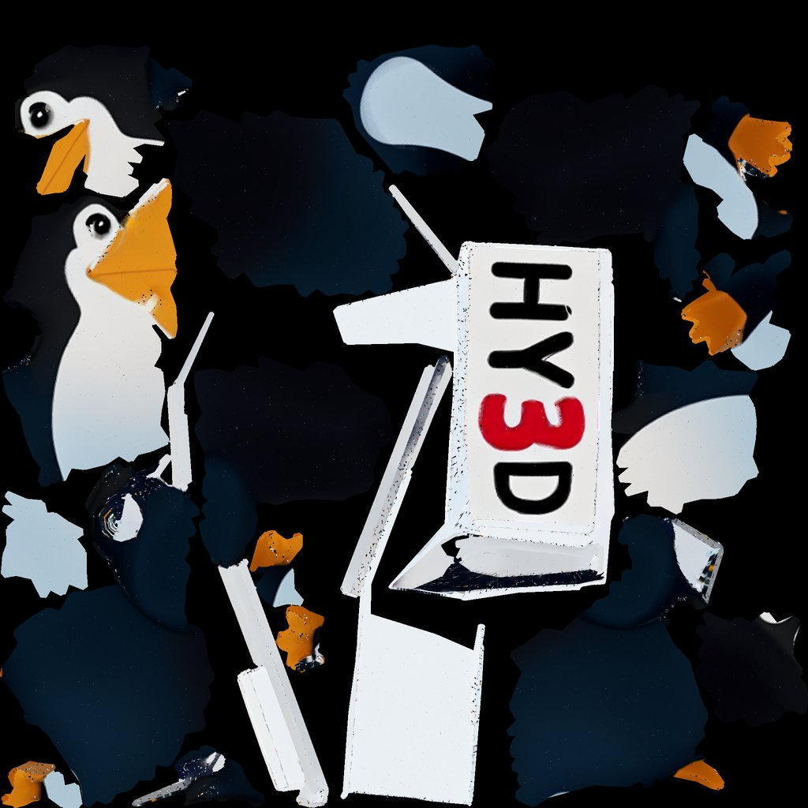
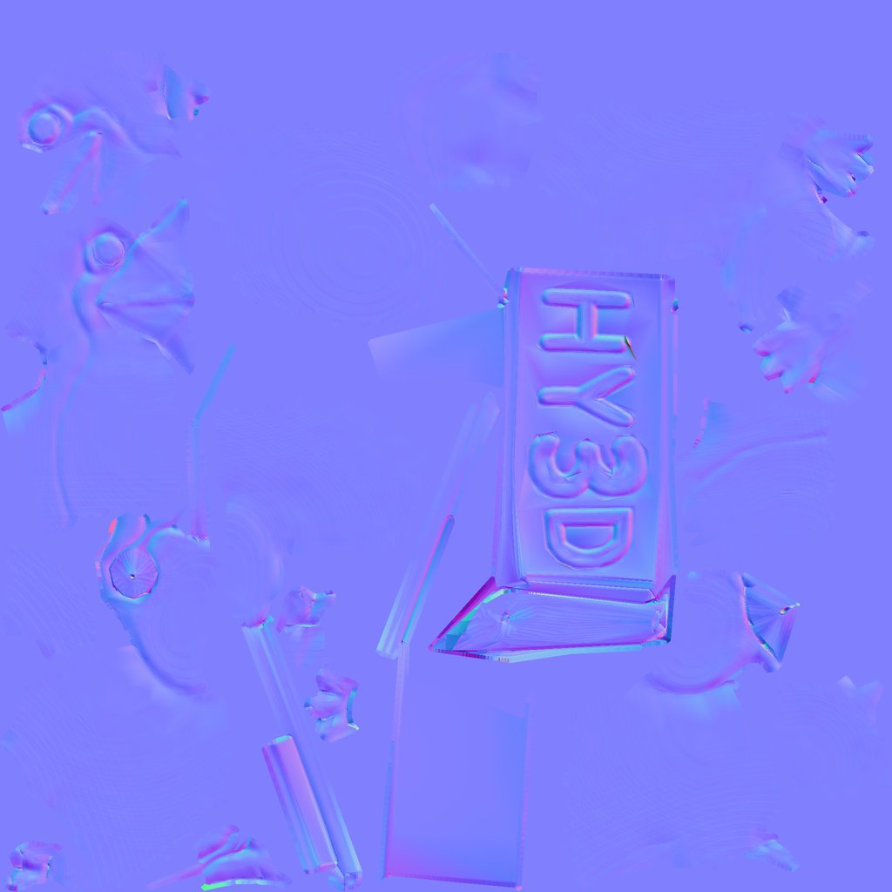

Input → generated → game-ready

The artist report
Every asset gets this table automatically. These are the checks a game artist runs before accepting a mesh: poly budget, watertight, manifold, one shell, no needle triangles, consistent normals, UV island count, UV stretch, texture coverage, PBR maps, real-world scale.
| check | generated mesh | after cleanup |
|---|---|---|
| poly budget | fail 715,062 tris vs budget 5,000 (143.0x) | pass 5,000 tris vs budget 5,000 (1.0x) |
| watertight | fail 0 boundary edges, closed but non-manifold | pass 0 boundary edges |
| manifold | fail 6 non-manifold edges | pass 0 non-manifold edges |
| single shell | fail 9 components, 8 tiny | pass 1 components |
| no degenerate faces | fail 36 zero-area, 38834 slivers | fail 0 zero-area, 132 slivers |
| consistent normals | pass winding consistent | pass winding consistent |
| uv islands | fail 27290 islands | pass 19 islands |
| uv stretch | pass p90 stretch 1.239 | pass p90 stretch 1.3 |
| uv coverage | pass 79% of texture used | pass 56% of texture used |
| pbr textures | fail baseColorTexture | pass baseColorTexture, normalTexture |
| real-world scale | pass extent [1.2675, 1.9963, 1.24] (units unknown; glTF = metres) | pass extent [1.2683, 1.9966, 1.238] (units unknown; glTF = metres) |
| total | 4 / 11 | 10 / 11 |
What the cleanup does
- Weld and repair. Merge seam-split vertices, drop floating fragments (9 shells → 1), fill holes, fix normals.
- Remesh to budget. Voxel remesh to a clean closed surface, then decimate to the prop budget (5,000 triangles). The high-poly is kept for baking.
- Artist-style UVs. Cluster faces into regions by position and normal, cut seams along region borders, unwrap each region with minimum stretch, split any region that stretches or folds. 19 islands, p90 stretch 1.30.
- Bake. Tangent normal and base colour from high to low, so the detail survives the 140× triangle cut.
- LODs and export. 5,000 / 2,500 / 1,250 triangles, pivot at the base, glTF. Whole stage: 30.8 s on one GPU.
Renders and maps




Where it stands
This is the geometry half: the part of generated 3D that artists otherwise fix by hand. What is next is the artist half: a style model trained on a studio's own art so the output matches the look, and an in-DCC tool where the artist accepts, rejects or regenerates one part at a time, with every decision logged as training data.
Known limits today: 132 needle triangles remain from the decimator; texture coverage is 56% where a hand unwrap reaches 70–80%; topology is triangles, not quads; roughness and ambient occlusion are not baked yet.